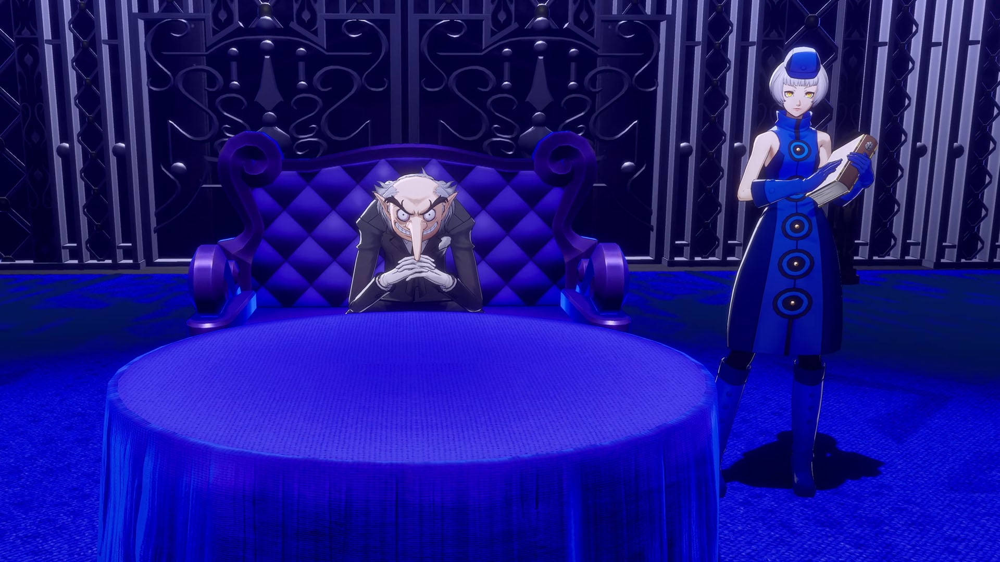
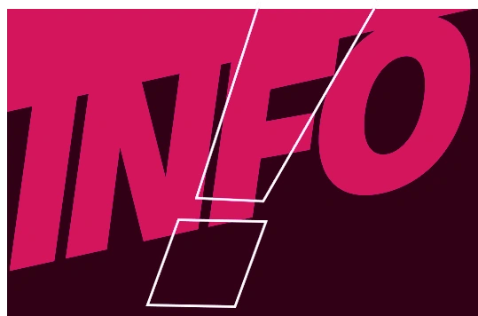

群成员人格档案
MAGICAL FACTOR PARLIAMENT ARCHIVE
观察月报 · 2026-09
档案
关系
魔女因子议会 · 成员
—
档案速览
DOSSIER · 实时演算
互动最多
档案完整度
—%
基于近月语料抽样观察
典型证词
—
群内原始发言摘录

观察月报
成员 · 2026-09
群员关系图谱
回复 × 提及 · 互动频度连线 · 点击节点查看
点击节点查看该成员的群内互动
‹
›
«
»
UI 素材出自《女神异闻录3 Reload》（©ATLUS），仅供非商用致敬